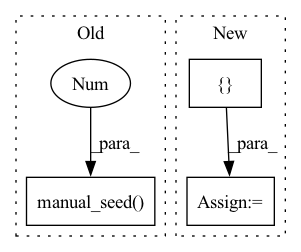

Pattern ID :2720
Before Change
print(input.size(), output.size())
def _test_d2block():
torch.manual_seed(111 )
batch_size = 4
H, W = 16, 32
in_channels, growth_rate = 4, 2After Change
print(input.size(), output.size())
print()
growth_rate = [ 3, 4, 5, 6 = D2Block(in_channels, growth_rate, kernel_size=kernel_size)
print(model)
output = model(input)In pattern: SUPERPATTERN
Frequency: 3
Non-data size: 3
Instances Fragment ID: 10920469
Project Name: tky823/dnn-based_source_separation
Commit Name: 8fb5cd5f4f8b4a435d058aef6204904f657abea0
Time: 2021-06-06
Author: 40362510+tky823@users.noreply.github.com
File Name: src/models/d2net.py
M Class Name: AnonimousClass
N Class Name: AnonimousClass
M Method Name: _test_d2block(0)
N Method Name: _test_d2block(0)
M Parent Class:
N Parent Class:
M File Name: src/models/d2net.py
N File Name: src/models/d2net.py
M Start Line: 156
M End Line: 163
N Start Line: 108
N End Line: 128
Before Change
return output
def _test_d3block():
torch.manual_seed(111 )
batch_size = 4
H, W = 16, 32
in_channels, growth_rate = 3, 2After Change
print(input.size(), output.size(), model.out_channels)
print()
growth_rate = [ 3, 4, 5, 6 Fragment ID: 10920465
Project Name: tky823/dnn-based_source_separation
Commit Name: 8fb5cd5f4f8b4a435d058aef6204904f657abea0
Time: 2021-06-06
Author: 40362510+tky823@users.noreply.github.com
File Name: src/models/d3net.py
M Class Name: AnonimousClass
N Class Name: AnonimousClass
M Method Name: _test_d3block(0)
N Method Name: _test_d3block(0)
M Parent Class:
N Parent Class:
M File Name: src/models/d3net.py
N File Name: src/models/d3net.py
M Start Line: 372
M End Line: 387
N Start Line: 498
N End Line: 518
Before Change
N = 99997
result_tolerence = 1e-2
gradient_tolerance = 2e-2
torch.manual_seed(0 ) // we have to seed torch to get reproducible results
// Define integrators
integrators = [MonteCarlo(), Trapezoid(), Simpson(), Boole(), VEGAS()]After Change
domain = torch.tensor([[-1.0, 1.0]])
domain.requires_grad = True
extra_args = {}
if type(integrator).__name__ == "MonteCarlo":
extra_args["seed"] = 0
result = integrator.integrate(
some_function, dim=1, N=N, integration_domain=domain, **extra_args Fragment ID: 10920472
Project Name: esa/torchquad
Commit Name: fb4b94c7d9cccc4b57ec76edd95af79bd30a8f9e
Time: 2022-03-14
Author: ga84muv@mytum.de
File Name: torchquad/tests/gradient_test.py
M Class Name: AnonimousClass
N Class Name: AnonimousClass
M Method Name: test_gradients(0)
N Method Name: test_gradients(0)
M Parent Class:
N Parent Class:
M File Name: torchquad/tests/gradient_test.py
N File Name: torchquad/tests/gradient_test.py
M Start Line: 36
M End Line: 36
N Start Line: 39
N End Line: 49